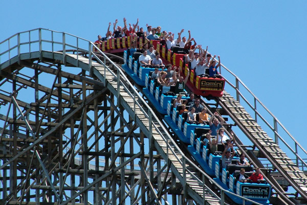
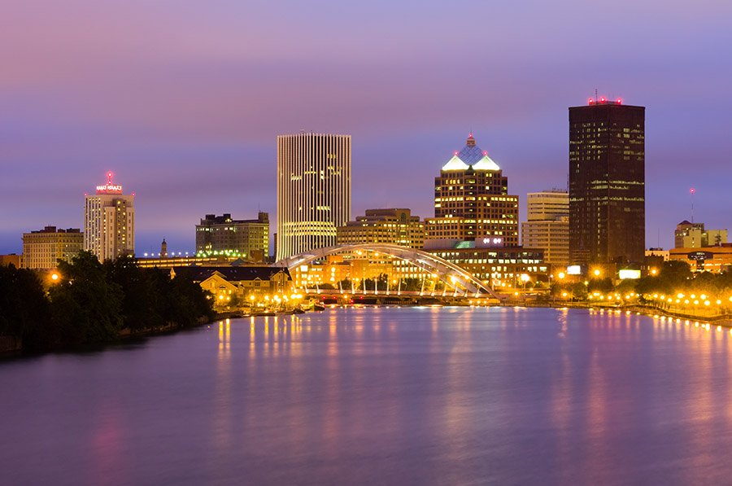

The Finger Lake Area
The Finger Lakes is a region of New York State. It's named for its series of long, thin lakes, and known for its vineyards.
Royal Ontario Golf Course
A Geoffrey Cornish Designed Golf Course Established in 1928.The Ontario Golf Course is a 10 minute drive from the motel.

Seabreeze Amusement Park
Seabreeze Amusement Park is 14 miles away from Budget Inn.

Rochester Downtown
Rochester is a city on the southern shore of Lake Ontario in the western portion of the U.S. state of New York, and the seat of Monroe County.

The Lake Ontario
The City of Rochester sits on the southern shore of mighty Lake Ontario, one of the Great Lakes, and the fourteenth largest lake in the world.

George Eastman House & Garden
The historic mansion and gardens at the George Eastman Museum. Original furnishings and artifacts, careful reproductions, and beautifully restored landscape transport visitors to George Eastman’s time.

The High Falls of the Genesee River in Rochester
The High Falls (or Upper Falls) of the Genesee River in Rochester, New York is a fine waterfall located right smab in the middle of the city.

The Corning Museum of Glass
The Corning Museum of Glass is a museum in Corning, New York dedicated to the art, history and science of glass.

The Strong National Museum of Play
The Strong® is a highly interactive, collections-based museum devoted to the history and exploration of play. It is one of the largest history museums in the United States and one of the leading museums serving families.
Dinning & Entertainment
Wegmens
The High Falls (or Upper Falls) of the Genesee River in Rochester, New York is a fine waterfall located right smab in the middle of the city.
The Corning Museum of Glass
The Corning Museum of Glass is a museum in Corning, New York dedicated to the art, history and science of glass.